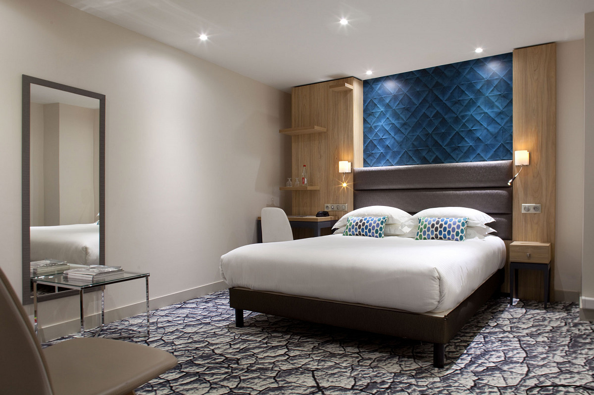
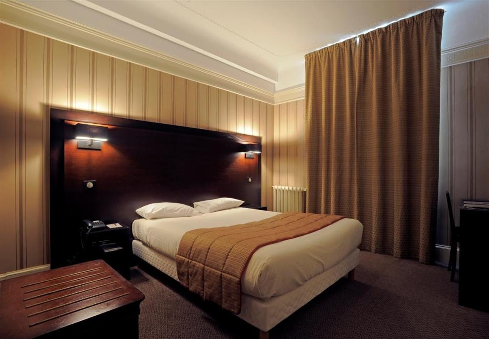
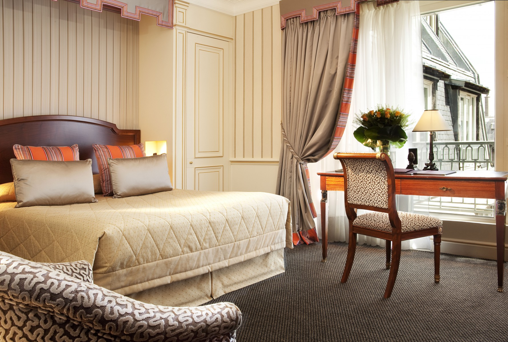
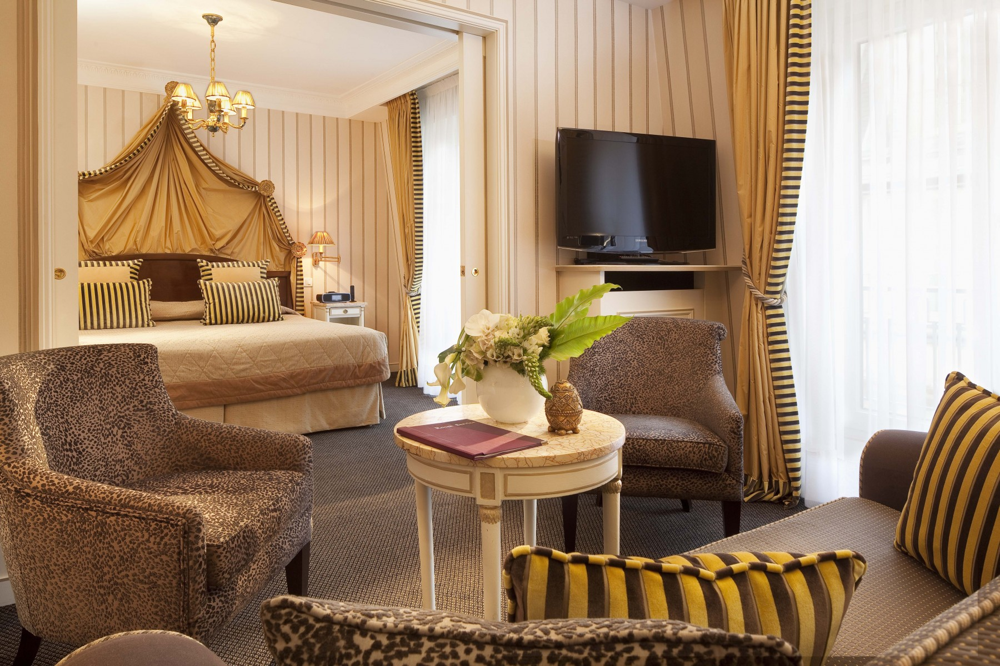

Découvrez nos gammes
de chambres.
Le chic de Paris, le style Parimis. Nos 98 chambres et 40 suites parmi les plus spacieuses de Paris allient à merveille le chic moderne, les détails Art déco et les accents orientaux.
Chambre Classique
Ambiance feutrée, tons chauds, nos chambres classiques sont délicieusement romantiques.
Les jolis tissus de collection et les tableaux anciens expriment parfaitement le chic à la française. Donnant sur l'Avenue de Friedland ou sur l'une de nos cours fleuries, toutes vous assurent calme et repos. Les chambres sont décorées de style « Empire » et les salles de bains en marbre et acajou sont équipées de baignoire avec douche et de produits d'accueil L'Occitane en Provence.
À PARTIR DE 269 € PAR NUIT *
RÉSERVER
Chambre Confort
Camaïeu de couleurs douces et grand drapé de style «Empire», nos chambres confort ont un charme typiquement parisien.
Elles donnent soit sur l'une de nos cours fleuries soit sur la belle Avenue de Friedland. Leur atmosphère confortable inspire quiétude et repos. Ces chambres élégantes sont toutes équipées d'un bureau pour travailler, écrire ou rêver. Les belles salles de bains de marbre avec baignoire et/ou douche sont équipées de produits L’Occitane en Provence.
À PARTIR DE 314 € PAR NUIT *
RÉSERVER
Chambre Deluxe
Élégance classique, meubles en acajou, nos chambres Deluxe sont l’expression parfaite de l’Hôtel Napoléon. Avec leurs fauteuils confortables et leurs tissus aux couleurs chatoyantes, vous vous sentez comme dans une grande maison accueillante.
Ces chambres très spacieuses donnent sur l'une de nos cours fleuries. Les belles salles de bains de marbre et bois vernis avec baignoire et/ou douche sont équipées de produits L’Occitane en Provence.
À PARTIR DE 360 € PAR NUIT *
RÉSERVER
Chambre Suite
Avec ses Suites, l’Hôtel Parimis vous propose quelque chose de précieux : le calme et le confort au cœur de Paris. Fauteuils profonds, tableaux anciens, tissus brodés, chaque détail exprime la quiétude et le luxe à la française.
Le majestueux dais qui couronne votre lit rappelle le « Premier Empire » dont tout le décor s’inspire, adroitement associé aux dernières technologies. Donnant sur un patio fleuri, elles disposent d’un salon avec bureau et canapé. Celui-ci peut être
converti en couchage supplémentaire pour deux personnes, idéal pour les familles.
Les magnifiques salles de bains de marbre et acajou avec grande douche et baignoire séparées sont équipées de produits L’Occitane.
À PARTIR DE 484 € PAR NUIT *
RÉSERVER